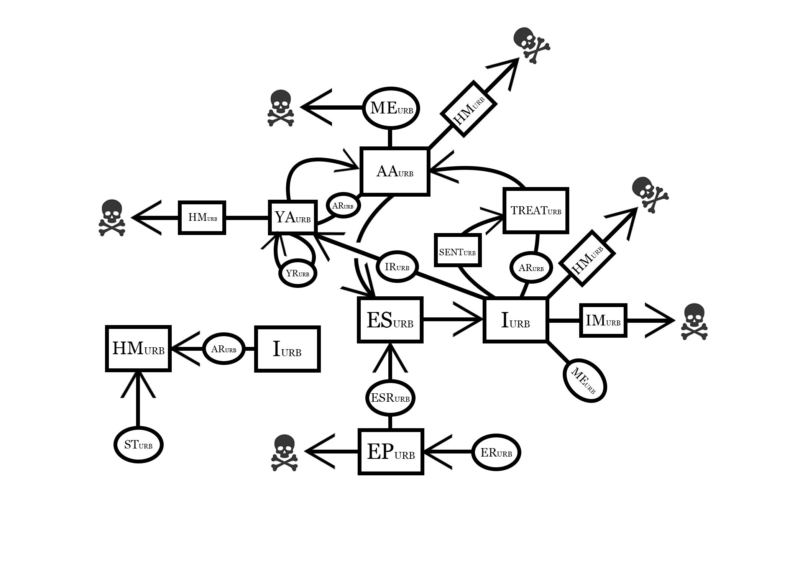

A Mathmatical Model of EAB
Dynamics in Vermont
Introduction
Emerald Ash Borer (EAB, Agrilus planipennis), an invasive, phloem-feeding, jewel beetle originating from east Asia, is an imminent threat to ash species (Fraxinus spp.) outside of its native range[1]. First detected in Vermont in 2018 in Orange County EAB has quickly spread to almost every county in Vermont[2] and has now made its way onto Bennington campus. EAB has already swept throughout much of the Midwest from the epicenter of invasion in Michigan. From this we know that EAB is fatal to all ash species in North America and that mortality is almost certain 4-6 years after invasion[1][3][4][8]. For this project I have created a model to investigate the invasion dynamics of EAB here in Vermont to gain a better understanding of what future forest structure may look like. Dynamics of EAB invasion included in this model include the aforementioned mortality after 6 years as well as both natural and anthropogenic EAB dispersal[1], frequency of mating and fecundity of EAB[5], and preferential targeting of stressed trees[6]. Ash population and forest land use responses and breakdown are also accounted for with rural, residential and urban environments being simulated[7][8].
The Model
Some Model Equations

Results

Using stochastic parameters I sought to see how EAB infestation would effect ash trees in Vermont. My model predicts that, under the select conditions, that the ash population in Vermont will continue to grow until a critical threshold of EAB is reach where upon there are no more healthy adult ash trees on the landscape. Then, once all the ash is infested, they quickly begin to die off decimating the population. While all adult ash will have died off, small amounts of young ash and seedlings remain allowing for bursts of population growth as EAB dies off due to a lack of viable habitat. These bursts of growth are quickly overtaken with infestation once again as the cycle repeats.
Discussion
My model predicts that ash will die off within the next thirty years due to EAB infestation. This models prediction is fairly congruent with what has been observed in states such as Michigan where EAB has already passed through and destroyed the ash population. My model, however, has some key limitations. For instance it doesn't take into account how the increased stress under different climate change regimes might affect the spread of EAB and mortality of ash. Additionally, the model also doesn’t take into account various biologically relevant factors such as EAB instar and reproductive lifecycle, the different resistances to EAB between north American ash species, the potential for evolved resistance, etc.
References
[1] Herms, Daniel A., and Deborah G. McCullough. "Emerald ash borer invasion of North America: history, biology, ecology, impacts, and management." Annual review of entomology 59 (2014): 13-30. [2] Agency of Agriculture Food and Markets (2025), Emerald Ash Borer, Retrieved from https://agriculture.vermont.gov/public-health-agricultural-resource-management-division/plant-health-and-pest-management/vermont-1 [3] Knight, K.S., Brown, J.P. & Long, R.P. Factors affecting the survival of ash (Fraxinus spp.) trees infested by emerald ash borer (Agrilus planipennis). Biol Invasions 15, 371–383 (2013). https://doi.org/10.1007/s10530-012-0292-z [4] McCullough, D.G., Agius, A., Cappaert, D., Poland, T.M., Miller, D.L., Bauer, L.S., 2003. Host range and host preference of Emerald Ash Borer. In: Mastro, V., Reardon, R. (Eds.), Abstracts of Emerald Ash Borer Research and Technology Development Meeting. Forest Health Technology Enterprise Team. USDA FHTET-2004-02. [5] Claire E Rutledge, Melody A Keena, Mating Frequency and Fecundity in the Emerald Ash Borer Agrilus planipennis (Coleoptera: Buprestidae), Annals of the Entomological Society of America, Volume 105, Issue 1, 1 January 2012, Pages 66–72, https://doi.org/10.1603/AN11037 [6] Deborah G. McCullough, Therese M. Poland, Andrea C. Anulewicz, David Cappaert, Emerald Ash Borer (Coleoptera: Buprestidae) Attraction to Stressed or Baited Ash Trees, Environmental Entomology, Volume 38, Issue 6, 1 December 2009, Pages 1668–1679, https://doi.org/10.1603/022.038.0620 [7] Agency of Natural Resources Department of Forests, Parks and Recreation (2010), State Assessment and Resource Strategies, Retrieved from https://fpr.vermont.gov/sites/fpr/files/Forest_and_Forestry/Vermont_Forests/Library/Priority%20Areas%20and%20Issues.pdf [8] Department of Forests, Parks & Recreation (2024), Emerald Ash Borer Information for Forest Landowners, Retrieved from https://fpr.vermont.gov/sites/fpr/files/Forest_and_Forestry/Forest_Health/Library/EAB%20Landowner%20FAQs.pdf